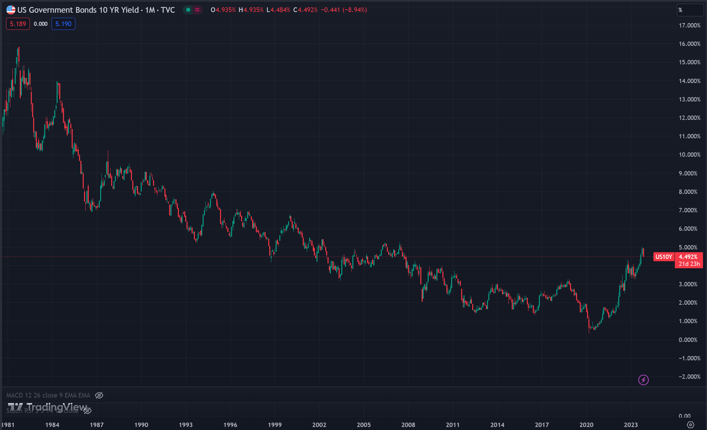
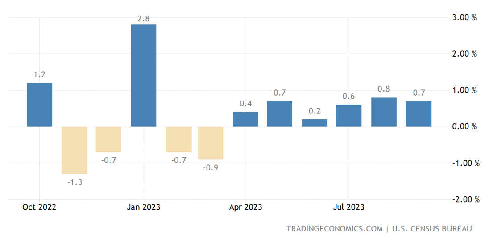

Major Indices
| Index | Performance |
|---|---|
| S&P 500 | -2.39% |
| DOW Jones | -1.49% |
| NASDAQ | -2.90% |
| FTSE 100 | -2.60% |
| DAX | -2.56% |
| Nikkei 225 | -3.27% |
| Shangai Composite | -3.40% |
World Sector Performance
10 Year Treasuries Hit 5%
For the first time since 2007, the 10 Year Treasury has reached 5%, from 0.5% early on in the Covid-19 pandemic This has been driven by investors pricing in strongr US growth as well as fiscal slippage (the deviation in expenditure from the expected).
US 10 Year Treasury Yield since 1980 (Trading View)
US Retail Sales Data
Monthly retail sales increased 0.7% in September (much higher than the 0.3% Dow Jones estimate) and core sales up 0.6%. Sales gains were quite broad across categories, with the largest growth being from miscallaneous store retailers at 3%. This is seen to confirm predictions of 4% GDP growth. This data also gives the FED less reason to loosen their tight monetary policy as the 10 year treasury yield pushes towards 5%. The consensus remains that the FED are done with rate hikes, though this does provide an opposing argument, the next FED decision is on Wednesday 1st November.
US Retail Sales Percentage Change MoM
Jerome Powell Speech in New York
Powell adressed the ongoing challenges against inflation, making hints that the FED plans to extend its rate pause, but there were no signs of any upcoming cuts in the near future. He did however warn that continued strong growth in the economy and the sell off in the treasury market 'could warrant further tightening of monetary policy'. Asian stock markets extended their sell off upon this speech, awaiting Japans September inflation data.
Japan Inflation Rate
Japan's core inflation slowed to below 3% for the first time in over a year, core CPI was up 2.8% YoY (2.7% forecasted). It is still above the centrals banks target of 2%. This data will play a key role in the BoJ's quarterly growth and price forecasts made on 31st October.

Japan Inflation YoY since 1960 (Trading Economics)
Other Headlines
- Hamas claim to be holding up to 250 people hostage whilst Israel allow basic humanitarian aid from Egypt into the Gaza Strip
- KPMG has cut jobs and frozen pay for its deal advisory staff in the UK
- NVIDIA and Foxconn are set to work together to build 'AI factories'